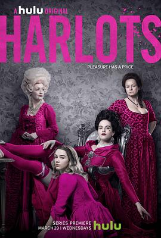

名姝 第一季 / Harlots Season 1
又名：花魁 / 妈妈桑 / 风流韵事 / 烟花女子 / 青城逸梦 / 鸨王争夺战
360行，行行出状元
作品信息
| 导演 | 科奇·吉尔佐 / 琪娜·木杨 |
| 编剧 | 莫拉·巴芙妮 / 艾莉森·纽曼 |
| 主演 | 萨曼莎·莫顿 / 杰西卡·布朗·芬德利 / 莱丝利·曼维尔 / 布朗温·詹姆斯 / 亚历克萨·戴维斯 / 多萝西·阿特金森 / 罗伊·贝克 / 罗里·弗莱克-拜恩 / 波佩·科比-特曲 / 霍莉·登普西 / 罗莎琳德·以利亚撒 / 凯特·弗利特伍德 / 艾丽·海登 / 爱德华·霍格 / 理查德·麦凯布 / 乔丹·A·纳什 / 史蒂文·罗伯特森 / 休·斯金纳 / 艾洛伊思·史密斯 |
| 类型 | 剧情 |
| 制片国家/地区 | 英国 / 美国 |
| 语言 | 英语 |
| 首播 | 2017-03-27(英国) / 2017-03-29(美国) |
| 季数 | 1 |
| 集数 | 8 |
| 单集片长 | 45分钟 |
| IMDb | tt5761478 |
最后一次看到是 2026-08-12T21:12:15+08:00 · 豆瓣原页